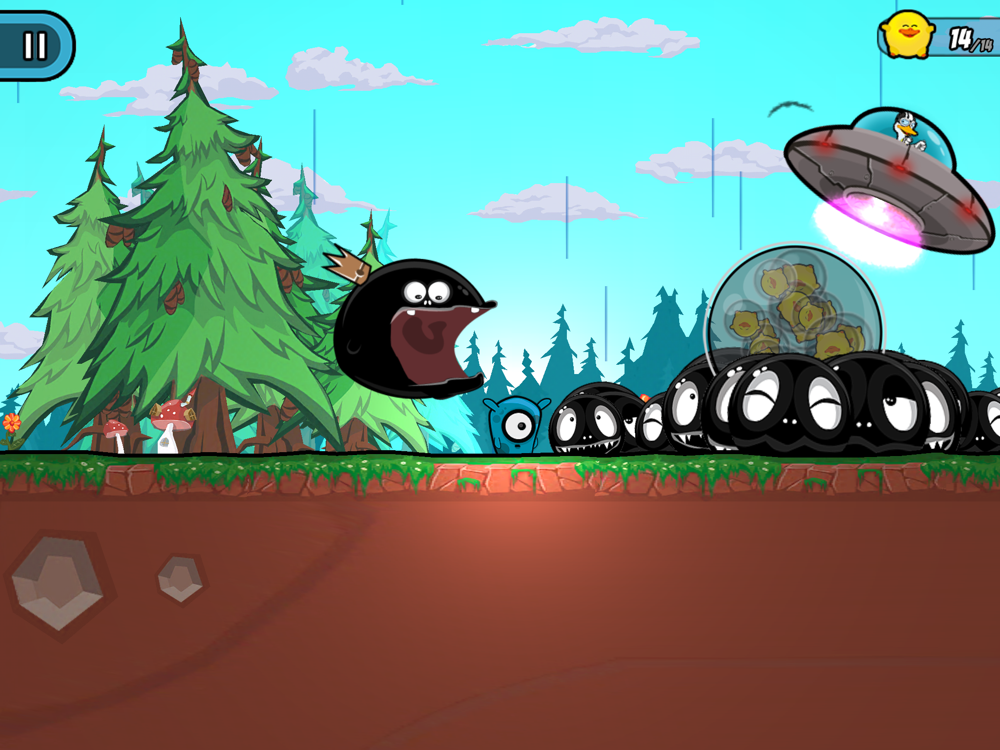

formal_ethics
An attempt at formalizing UPB-based ethics
Stefan Molyneux presents a framework for ethics in his book Universally Preferable Behaviour (UPB) - A Rational Proof of Secular Ethics, in which commonly accepted moral rules are deduced from first principles. This paper is an attempt at outlining a mathematical formalism for a subset of the philosophical reasoning, namely ethics between actions of...
new_engine
C or C++ for my game engine?
I decided to rewrite my C++ game engine in C about a year ago. Failing with C++ was my own fault of course, and part of the learning process. In this post I'll explain how I ended up deserting the old friend....
baccalaureate
Real-time visualization of hydrogen electron orbitals
This is my work for the bachelor's degree in theoretical physics at the University of Helsinki....
pain_in_game_development
Simplifying
C makes it easy to shoot yourself in the foot; C++ makes it harder, but when you do it blows your whole leg off. -- Bjarne Stroustrup...
clover_engine_mistakes
Absolution
There's a strong sense in the C++ and OOP community of what's the correct way to write programs. During the development of my first full-blown game engine I've come to realize that many of these best practices are self-serving and have no basis in the sense of making programming enjoyable, productive, or making the code efficient. Many of them are widely used because they provide a ...
clover_engine_open_sourced
Clover engine is now open source under the MIT license!
After a lot of thinking and talking to people a conclusion was reached: it'd be in the best interest of everyone if the Clover engine was released as open source. Furthermore, the MIT license was chosen because it's simple and more attractive for users than e.g. restrictive GPL. Unrestrictive ...
project_clover
An open source game project
Here are some links to help you figure out what kind of game Clover will be. More specific information will be here when I get my writings from the currently offline server of projectclover.org....
clover_misc_art
Bits and pieces from the past
 ...
...
splot
Splot
 Splot is a mobile platformer game released in 2014, published and developed by a finnish game company Frozenbyte. I was part of the small development team during three summers and continued some time as part-time along with high school....
jazz2_levels
Jazz Jackrabbit 2 home cooked levels from 2002
Forest
This is the first complete level I've made for any game. By the time I started building this I was eight years old, and not knowing English very well I discovered most features of Jazz Creation Station by trial and error....
14_assembly_entry
Unqualified
This is a song I made in a hurry for a Assembly '14 competition. It didn't make beyond the initial jury though....
11_assembly_entry
Something orchestral
Didn't pass the Assembly jury....
orchestral_experiment
Escape
Here's my first orchestral music thingy back from 2010. The substandard quality is partially due to Propellerhead Reason's flat orchestral samples, but mostly I'm to blame....